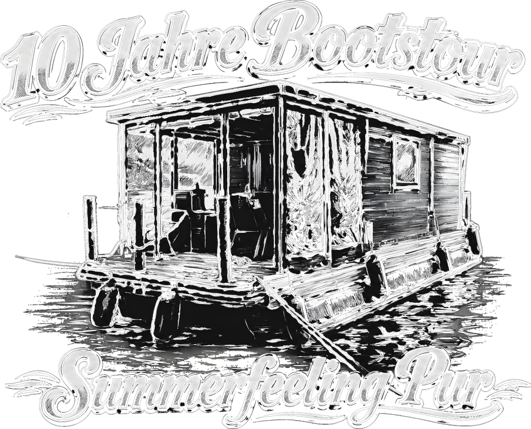

Schleusenkräuter
„Der Schluck für Schleusenzeit“
40 % vol. Wartezeit, veredelt. Seit Generationen von Bootsurlaubern an deutschen Binnenschleusen ignoriert, jetzt endlich in Flaschenform: Schleusenkräuter – der Kräuterschnaps, der genau so lange braucht wie eine Schleusung, aber deutlich besser schmeckt.
53°38′ N · 12°58′ O — Start: PriepertBis zum Ablegen in Priepert
Dann heißt es wieder: Leinen los, Poller frei, Schleusenkräuter kalt gestellt.
13.07.2026, 13:00 Uhr – Start der Tour auf der Mecklenburgischen Seenplatte, ab Priepert.

10 Jahre Bootstour
Summerfeeling pur, seit einer Dekade
Aus einem spontanen Wochenende auf der Seenplatte ist eine Institution geworden: 2026 heißt es zum zehnten Mal „Leinen los“ – mit derselben Crew, denselben Diskussionen über die Vorfahrtsregeln an der Schleuse und, neuerdings, mit eigenem Kräuterschnaps. Dieses Motiv ziert dieses Jahr das offizielle Crew-Shirt.
Aus der Schleuse in die ganze Welt
Eine (weitgehend wahre) Entstehungsgeschichte
Es war eine laue Sommernacht vor der Schleuse Mirow. Sechs Männer, ein Boot, null Ahnung, wie lange so eine Schleusung eigentlich dauert. Nach der dritten Runde „Sind wir jetzt oben oder unten?“ war klar: Diese Wartezeit braucht Veredelung. Aus Bordvorräten, gutem Willen und einer gehörigen Portion Verzweiflung entstand die erste Charge Schleusenkräuter – und ist bis heute die einzige Spirituose, die offiziell nach Wasserstraßenverkehrsordnung gebraut sein könnte, wäre das nicht ausdrücklich verboten.
So schmeckt Schleusenzeit
Verkostungsnotizen von Leuten, die eigentlich nur aufs Klo mussten
Nase
Diesel, Dill und ein Hauch von Bootslack. Sehr maritim, sehr ehrlich.
Gaumen
Poller-Rost trifft Pfefferminz. Kräftig genug, um jede Anlegepanik zu betäuben.
Abgang
Lang. Sehr lang. Ungefähr so lang wie die Wartezeit vor der Schleuse an einem Sonntagnachmittag.
Wirkung
Macht aus jedem Landratten-Manöver eine Geschichte, die beim nächsten Schleusenwärter für Aufsehen sorgt.
Zutaten
100 % Bordvorrat, streng geheimes Rezept
Nach original Kombüsen-Rezeptur, seit der ersten Tour unverändert (behaupten wir zumindest):
- Wacholder, gepflückt in Sichtweite des Schleusenwärterhäuschens
- Ein Schuss Dieselgeruch (rein olfaktorisch, versprochen)
- 6 Teile Vorfreude auf den nächsten Landgang
- 1 Prise Poller-Rost, für die Mineralstoffe
- Destilliertes Elbe-Havel-Wasserstraßen-Wasser (gefiltert!)
- Eine großzügige Menge Optimismus bezüglich der Wetter-App
Die Crew
Verkostungskomitee, Schleusenwarte und moralische Unterstützung
Lennart
Hat die Seekarte im Griff, meistens auch das Boot. Erste Amtshandlung an jeder Schleuse: laut ansagen, wie tief wir jetzt sind.
Henrik
Zuständig für Leinen, Fender und die Aussage „Das schaffen wir locker“ kurz vor jedem Anlegemanöver.
Patrick
Kennt jede Handkurbel persönlich. Hat außerdem diese Website gebaut, während er eigentlich schon hätte packen sollen.
Jonas
Plant den Einkauf für sechs Personen, kauft für zwölf. Trägt die Verantwortung für den Kühlbox-Frieden.
Till
Bringt die Boxen, die gute Laune und mindestens eine Schnapsidee pro Schleusung.
Florian
Schläft leicht, wacht bei jedem Poller-Geräusch auf und ruft dann sicherheitshalber „Steuerbord!“.
Wo wir hinfahren
Mecklenburgische Seenplatte, Start ab Priepert
Wie jedes Jahr geht es auf die Mecklenburgische Seenplatte – eines der größten zusammenhängenden Wassersportreviere Europas, gefühlt aber hauptsächlich bekannt für seine Schleusen, die genau dann kommen, wenn man gerade angefangen hat, sich einen Schleusenkräuter einzuschenken.
Startpunkt ist traditionell Priepert – von dort geht's über Seen, Kanäle und diverse Schleusen quer durch die Region, mit dem festen Ziel, möglichst viele Anlegestellen, Kioske und Bäckereien zu testen.
Zur Reisekarte